Αρχική σελίδα

Χαίρετε! Λέγομαι Άστερ και έχω αποφοιτήσει από το (πρώην) τμήμα Μηχανικών Αυτοματισμού Τ.Ε. του Διεθνούς Πανεπιστημίου της Ελλάδος (πρώην ΑΤΕΙΘ). Ειδικεύομαι στη διαχείριση συστημάτων και στη μηχανική ενσωματωμένων συστημάτων.
Στο παρελθόν, είχα επίσης συνεισφέρει στην Aristotle Space & Aeronautics Team, στην ομάδα AutoROS του ΔΙΠΑΕ, τη Βαλκανική Ολυμπιάδα Φυσικής, και στο Διεθνές Συνέδριο Μικροσυστημάτων.
Κάνοντας κλικ στην κεφαλίδα "Aster's Space" στην κορυφή οποιασδήποτε σελίδας, μπορείτε να [απ]ενεργοποιήσετε τη λειτουργία προσβασιμότητας!